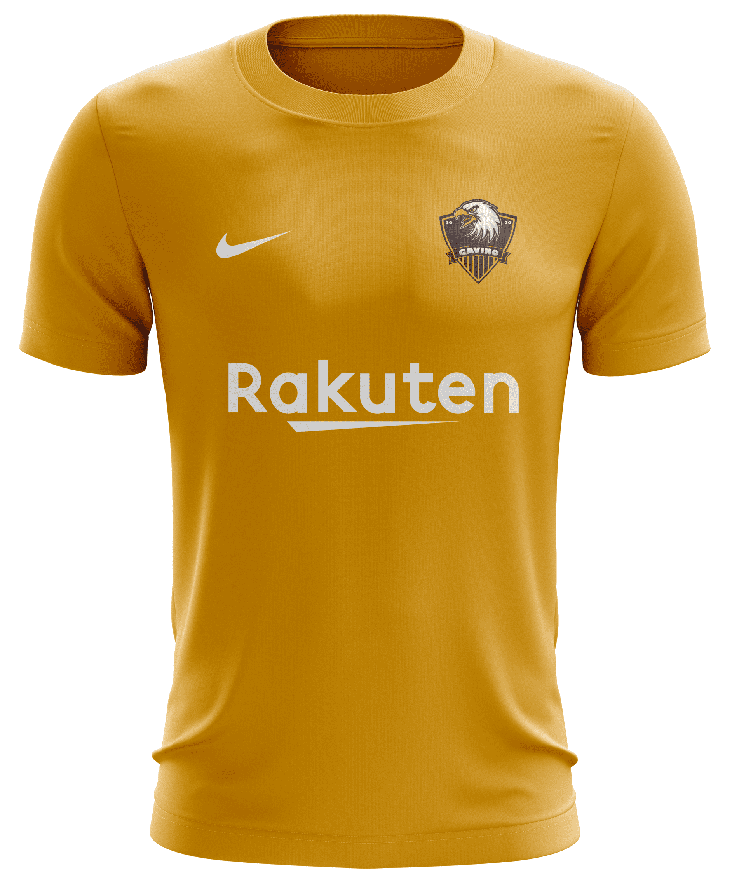
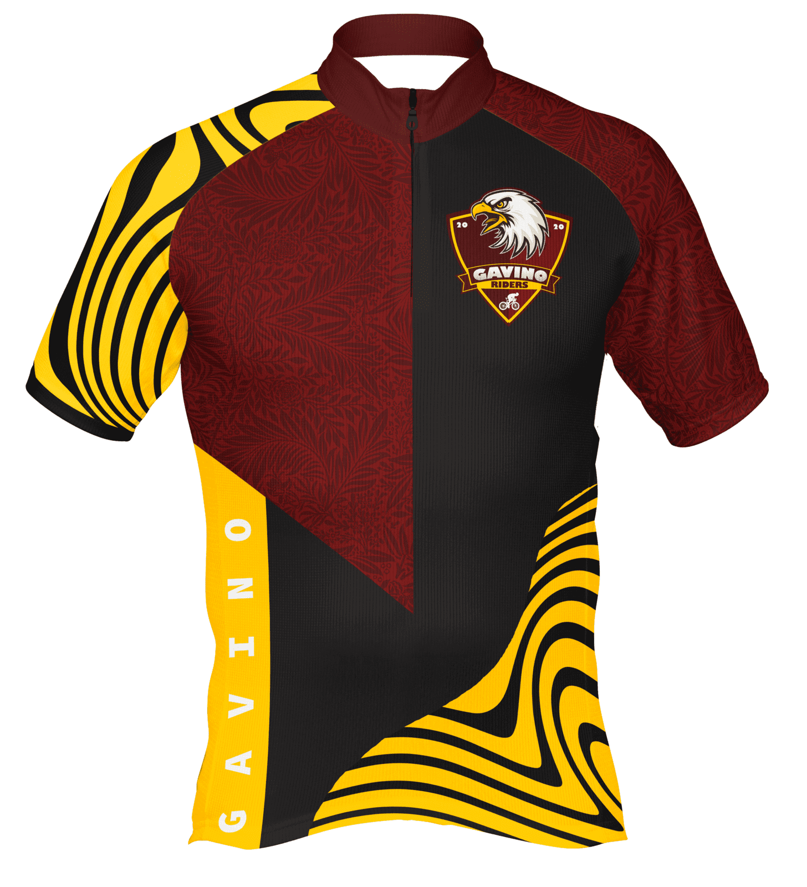
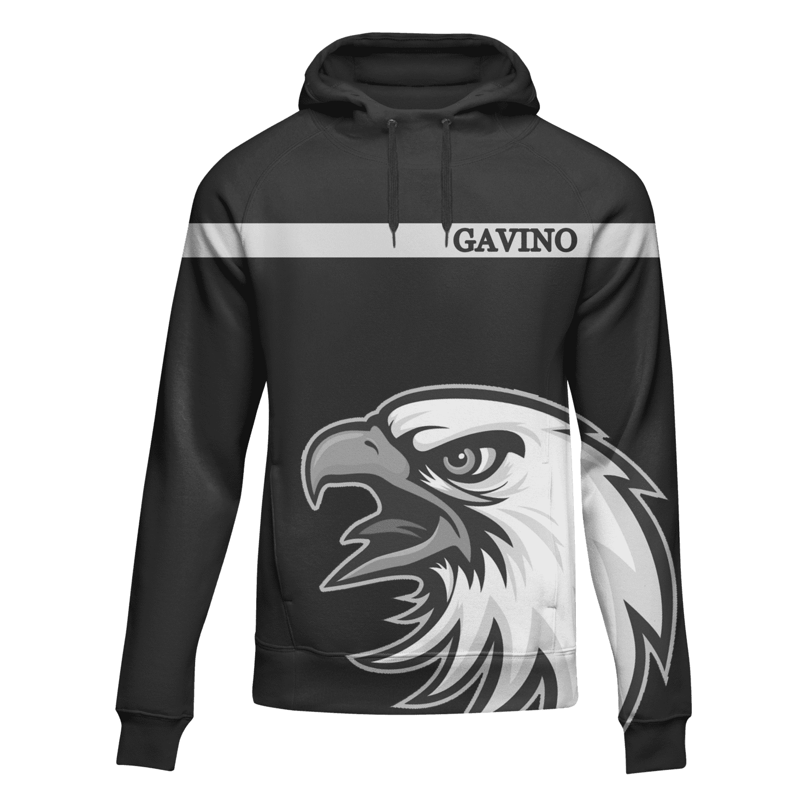

Vencer não é importante, é a única coisa que conta!
O time de futsal do Gavino foi criado por três amigos moradores do prédio com o mesmo nome situado na cidade de Águas Claras.
O começo não foi fácil, diversidades fizeram com que Guilherme Costa, Renan Moraes e Guilherme Gomes pensassem em desistir, pois as pessoas não acreditavam que a ideia pudesse sair do papel e se concretizasse.Especialmente porque os recursos não eram suficientes. Porém, a vontade de ver o sonho tornar-se realidade os encorajaram a seguir em frente, tornando-se assim, mais um segmento do futsal amador de Brasília.
Esses são alguns dos nossos produtos disponíveis na loja
|  | |
 |  |
| Camisa A | Camisa B | Camisa Especial | Casaco All Black |
| Camisa principal utilizada para os jogos que acontecem em nossa casa | Camisa secundária utilizada para os jogos que acontecem fora de casa | A Camisa especial de ciclismo é perfeita para você que busca o máximo de conforto durante suas pedaladas | Casaco de moletom edição limitada All Black |
Confira todos os produtos disponíveis
|
Nessa seção será possível encontrar os vídeos de treinos e dos melhores momentos de todas as partidas que já participamos. Caso tenha filmado alguma partida nossa, ficaremos muito feliz em receber o seu vídeo. |
mais vídeos... |
Desenvolvido por Guilherme Costa - 2020